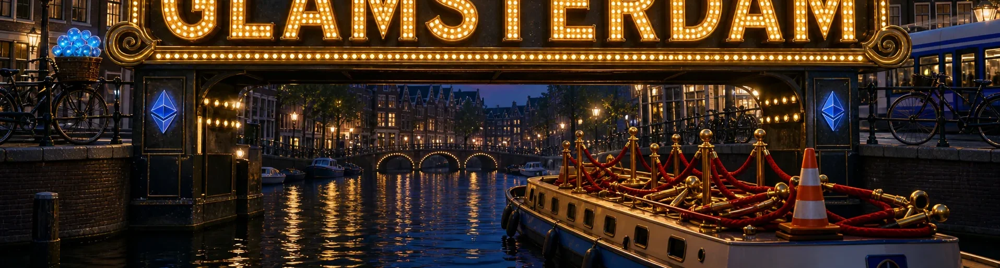
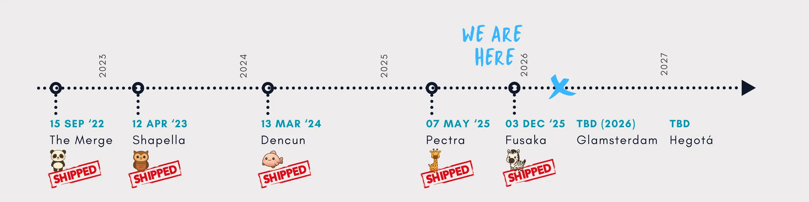
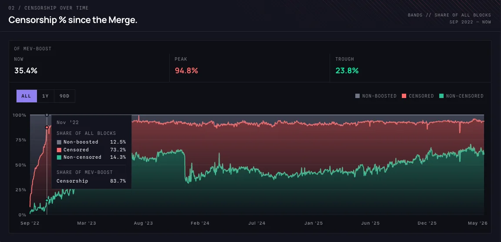
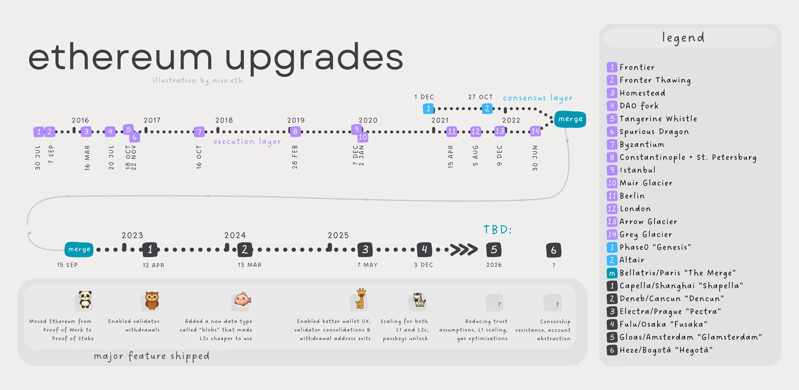

Glamsterdam is the biggest structural change to Ethereum since the Merge. It brings enshrined Proposer-Builder Separation, Block-Level Access Lists, and a protocol-layer fix for the MEV and censorship problem mevWatch has been tracking since 2022.
Intro
Ethereum's release cadence has quietly become one of the more predictable things in crypto. After years of "soon," core devs have settled into a rhythm of roughly two hard forks per year, each shipping a tightly scoped bundle of EIPs aimed at the same end state: a credibly neutral, censorship-resistant settlement layer with enough scaling headroom to actually be useful.

With Pectra behind us and Fusaka activated in December, attention has turned to Glamsterdam, the next mainnet upgrade. It's also the biggest structural change to Ethereum since the Merge, particularly if you've been following the MEV and censorship-resistance conversation on mevWatch, the dashboard we built and maintain to track OFAC-compliant block production on Ethereum. Glamsterdam is the upgrade that finally addresses, at the protocol level, the exact problem mevWatch has been measuring since the Merge.
A quick refresher on where we've been
Before getting into Glamsterdam, it's worth grounding ourselves in the post-Merge timeline, because the trajectory matters.
- The Merge (September 2022) moved Ethereum from proof-of-work to proof-of-stake. Energy use collapsed, the issuance curve flipped, and the door opened to everything since.
- Shapella (April 2023) finally enabled withdrawals for staked ETH. The missing piece that turned staking from a one-way commitment into a legitimate yield product.
- Dencun (March 2024) shipped EIP-4844 and proto-danksharding. Blob space made rollup data orders of magnitude cheaper, which is the single biggest reason L2 fees collapsed to fractions of a cent. We wrote about it here at the time.
- Pectra (May 2025) bundled 11 EIPs across both the consensus and execution layers. Account abstraction via EIP-7702, larger validator effective balances, and improved blob throughput were the standout shifts. Our take on Pectra is here.
- Fusaka (December 2025) then delivered PeerDAS (EIP-7594): Peer data availability sampling, the protocol's first real step toward full danksharding alongside a block gas limit bump from ~36M to 60M, a per-transaction gas cap (EIP-7825) for DoS hardening, and secp256r1 support (EIP-7951), which is the unsexy but important EIP that makes passkey and device-native signing viable on Ethereum.
Which brings us to Glamsterdam.
Glamsterdam: target date and what's in it
Glamsterdam (a portmanteau of Gloas for the consensus layer and Amsterdam for the execution layer) is targeting late Q3 2026 for mainnet activation.
We'll dive into the two headliner EIPs confirmed, as both are structural changes to how blocks are produced and validated.
EIP-7732 | Enshrined Proposer-Builder Separation (ePBS)
If you've followed the MEV conversation over the last few years, you know that the role of "block builder" and "block proposer" has been split in practice since the Merge, but the split has been held together by an out-of-protocol piece of middleware called MEV-Boost, run by trusted relays. It works, but it concentrates power in a small number of relay operators, and it's been a persistent source of censorship concerns.
Back in 2022, we built mevWatch to raise awareness this very problem, and recently gave the site a fresh redesign. In the months after the Merge, the share of OFAC-compliant blocks (blocks built by relays that filter sanctioned transactions, primarily Tornado Cash-related) climbed past 70% before community pressure, and the rise of non-censoring relays like Ultra Sound, Agnostic, and Aestus, pulled it back. mevWatch has tracked that figure block-by-block ever since, and it remains the clearest real-time picture of how much of Ethereum's block space is being filtered by U.S. regulatory compliance at the relay layer. It's a useful number, but it's also a workaround. Validators having to choose the right relay is a social-layer fix to what should be a protocol-layer guarantee.

ePBS takes the proposer/builder separation and enshrines it in the protocol itself. Proposers (who choose which block goes next) and builders (who assemble the actual execution payload) exchange blocks and payment through rules the chain enforces directly, with no third-party relay required. The expected outcomes are meaningful: researchers estimate MEV extraction drops by up to 70%, the data propagation window expands from ~2 seconds to ~9 seconds (unlocking higher throughput and more blob capacity), and Ethereum becomes materially harder to censor at the relay layer because there is no relay layer.
For anyone running validators, this is a real change to the staking economics and operational profile. For everyone else, it's the upgrade that finally moves MEV and censorship-resistance from a social trust assumption to a protocol guarantee.
EIP-7928: Block-Level Access Lists (BALs)
The second headliner is less philosophically charged but arguably more important for day-to-day scaling. Today, when a block is executed, validators discover which accounts and storage slots are touched as transactions run, sequentially. That's a hard constraint on parallel execution and a major contributor to worst-case block validation time.
BALs require blocks to pre-declare which accounts and storage slots will be read or written. With that information available up front, clients can fetch state in parallel, validate transactions in parallel, and pipeline execution far more efficiently. It's the foundation for a credible push toward 10,000 TPS on L1, and it pairs with a proposed block gas limit increase from 60M to as high as 200M.
Why it matters
The shorthand for Glamsterdam is "scaling and MEV reform", but it's worth unpacking who actually benefits.
- For L2s and rollup users, the combination of BALs, a higher gas limit, and the longer propagation window from ePBS means materially more blob capacity and cheaper data settlement. We've already seen what cheaper data does to L2 fees post-Dencun, fractions of a cent on the major rollups, and the use cases we predicted in 2023 (high-frequency gaming, on-chain order books, mainstream payments) actually shipping. Glamsterdam compounds that. The journey EIP-4844 started in March 2024 is the same one the protocol is still running on, more bandwidth, less friction, more headroom for the use cases that the old "blockchains can't scale" argument used to gatekeep.
- For traders and DeFi users, ePBS is the big one. Less extractable MEV means less sandwich attacks, less hidden tax on swaps, and pricing that better reflects the actual market. The censorship-resistance improvements also matter to anyone touching protocols that have historically been sanctioned-address-adjacent, and the OFAC-compliant block share should, in principle, become a much less meaningful metric once ePBS removes the relay chokepoint that creates it.
- For consumer apps and onchain UX, the parallel execution unlocked by BALs is the path to L1 actually feeling responsive at scale. Combined with secp256r1 from Fusaka, the building blocks for genuinely mainstream Web3 UX, passkeys, account abstraction, fast confirmations, predictable fees, are now all in place or imminent.
- For institutional stakers and validator operators, the move away from MEV-Boost relays simplifies the trust model. Fewer external dependencies, fewer points of failure, fewer compliance questions about which relay you're routing through.
Where it could go wrong
Glamsterdam is structurally ambitious, and the bullish read deserves a counterweight. ePBS adds real consensus-layer complexity, new slot structure, new attestation rules, new economic flows between proposers and builders, and coordinating five execution clients (Geth, Nethermind, Besu, Reth, Erigon) and five consensus clients (Prysm, Lighthouse, Teku, Nimbus, Lodestar) on changes this deep is genuinely hard. Slippage from H1 into late 2026 is a real possibility, and adding FOCIL or other non-headliner EIPs only widens that window. BALs also add a per-block computational burden on block producers, and the combination of more sophisticated builders and BAL overhead could quietly push solo stakers further to the margins, the opposite of what the upgrade is meant to protect.
There's also a subtler question on the MEV side. The headline "up to 70% MEV reduction" estimate assumes a competitive builder market post-activation. If a handful of sophisticated builders end up dominating the on-chain auction, the relay-layer concentration mevWatch currently tracks could simply re-emerge one layer deeper, at the builder layer instead. The protocol guarantees a fair auction; it doesn't guarantee a decentralised set of bidders. None of this is a reason not to ship Glamsterdam, but it is a reason to read the post-activation data carefully before declaring victory.
Looking past Glamsterdam
The next upgrade, Hegotá, is expected to bring on FOCIL and Verkle trees as headliners, and we'll cover them later in the year. Together, Fusaka, Glamsterdam, and Hegotá form the most aggressive 18-month stretch of protocol-layer change Ethereum has ever attempted.
The takeaway is that Ethereum is shipping, on a cadence, against a coherent roadmap. The through-line from EIP-4844 in 2024 to Glamsterdam in 2026 is consistent. More bandwidth, less friction, credibly neutral block production. For teams building on Ethereum, that's the signal worth paying attention to, not the price chart.

If your team is building on Ethereum and wants a sounding board on any of this, L2 strategy, staking setup, or MEV-aware contract design, get in touch.